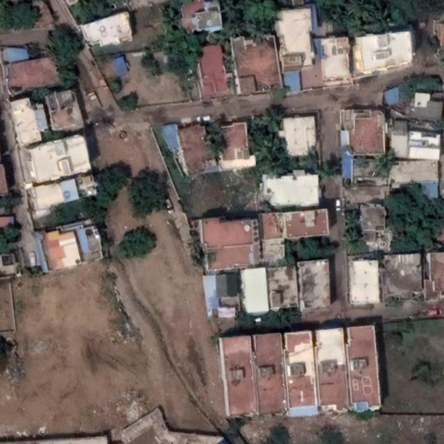

Civic Builder v. 0.1 Documentation
What is Civic Builder?
Welcome to Civic Builder, a Computer Vision-powered 3D content generation tool that combines modelling, satellite imagery and GIS data to generate realistic urban environments.
Utilizing a combination of pre-trained models and user controllable options, the tool works across different types of imagery inputs and different areas of the world.
It is aimed at simulations, games, and digital twin technologies.
Civic Builder creates customizable city layouts with varying densities and infrastructure types, controllable from the Blender plugin component.
Why would I use Civic Builder over others?
Civic Builder conveniently packages multiple workflows together and can be used by anyone, regardless of programming knowledge.
Furthermore:
• Civic Builder is OS-independent and can run on Windows, Mac and Linux through a conventient Python Flask web application.
• Civic Builder is self-contained and works without any expensive dependancies, and can be configured to your proprietary software.
• Civic Builder offers many feature extraction algorithms with an ever-expanding selection to suit your business.
• Civic Builder is easy to use, take a screenshot or upload imagery, select model, and extract features seamlessly.
• Civic Builder easily and seamlessly integrates into Blender and other 3D modeling solutions using standard data formats.
How does Civic Builder work?
1 - Import imagery: Get your professional or Google Maps snipped imagery with some buildings into the input directory to start.
This image shows the initial import of satellite imagery into the Civic Builder tool. The imported data is essential for the subsequent analysis and feature extraction.
Source: Roboflow Building Detection | License: CC BY 4.0
2 - Detect features using computer vision model: Select from some basic preferences to fine tune for the desired output.
This image illustrates the detection of various geographical features within the imported imagery, including buildings, roads, and other urban elements.
Source: Roboflow Building Detection | License: CC BY 4.0
3 - Generate 3D content: Seamless integration into Blender with commonly used formats like OBJ and FBX.
In this step, the detected features are imported into Blender to create a 3D model. This process is crucial for visualizing the extracted data in a realistic format.
Source: Roboflow Building Detection | License: CC BY 4.0
4 - Final result with textures and PBR materials applied: With many options for your needs!

The final result showcases the completed 3D model created from the detected features and imported into Blender. This model can be utilized for various applications, including simulations and visualizations.
Source: AccuCities | Textured City Models & Level 4 Context Models
And that's it! Without writing any code or using any complex systems you have gone from satellite imagery to high quality realistic 3D content!
If this looks like it fits your business/project needs, please follow the development below!
Where and how can I get Civic Builder?
Civic Builder is still under development, and development source code is available on GitHub:
https://github.com/MetePolat825/Civic_Builder_Procedural_City_ModelingThe final version of Civic Builder will be available through the following distributions, free and paid:
-
üåê Web Application
A free-to-use application built on the Python Flask framework, offering limited functionality. Perfect for users who want to explore basic features without any commitment.
-
üíª Local License Version
A one-time purchase option that includes a locally installed version of the software, pre-built with additional premium features for an enhanced user experience. Region specific model selections, enhanced footprints, extraction of other features such as roads trees and bodies of water!
-
üîÑ Monthly Subscription Service
A subscription-based model that allows access to both web and local versions of the software, complete with exclusive premium features. Region specific model selections, enhanced footprints, extraction of other features such as roads trees and bodies of water!
Please note that while in development Civic Builder is currently free to use, future versions with extended functionality will adopt a subscription-based model. Stay tuned for updates on new features and pricing!
Interested in learning more? Sign up for our newsletter to receive the latest news and updates about Civic Builder!
Contact for further pricing inquiries: mcp140@student.aru.ac.uk